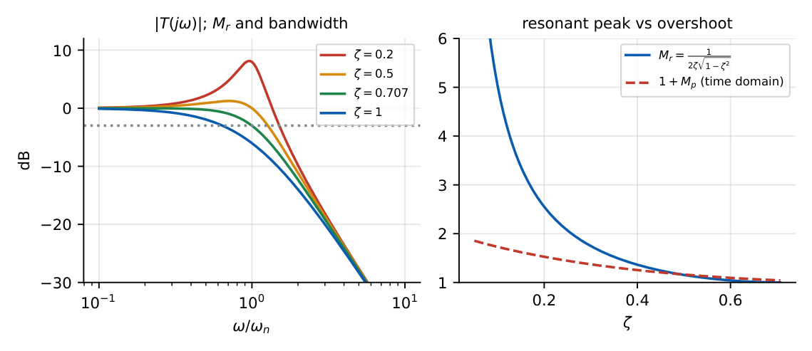

Frequency Response
In this chapter
Resonant peak, resonant frequency and bandwidth of a second-order system; gain and phase crossover frequencies; gain margin and phase margin as measures of relative stability. Feeds directly into Bode, Nyquist and compensator design.
13.1 Core concept
For a stable LTI system driven by \(r(t)=A\sin\omega t\), the steady-state output is \(c_{ss}=A|G(j\omega)|\sin(\omega t+\angle G(j\omega))\). Substituting \(s=j\omega\) gives the frequency response: magnitude \(M(\omega)=|G(j\omega)|\) and phase \(\phi(\omega)=\angle G(j\omega)\). It is valid only for stable systems (transient must decay).
13.2 Second-order system
For \(T(s)=\dfrac{\omega_n^2}{s^2+2\zeta\omega_ns+\omega_n^2}\), with \(u=\omega/\omega_n\): \[ M(u)=\dfrac{1}{\sqrt{(1-u^2)^2+(2\zeta u)^2}},\qquad \phi(u)=-\tan^{-1}\dfrac{2\zeta u}{1-u^2}. \]
Maximise \(M\): \(\dfrac{d}{du}\big[(1-u^2)^2+4\zeta^2u^2\big]=0\Rightarrow-4u(1-u^2)+8\zeta^2u=0\Rightarrow u_r=\sqrt{1-2\zeta^2}\). Substituting: \(M_r=\dfrac{1}{2\zeta\sqrt{1-\zeta^2}}\). A peak exists only for \(\zeta<1/\sqrt2=0.707\).
\(\omega_r=\omega_n\sqrt{1-2\zeta^2}\) (\(\zeta<0.707\)), \(M_r=\dfrac1{2\zeta\sqrt{1-\zeta^2}}\),
Bandwidth (\(-3\) dB): \(\omega_b=\omega_n\sqrt{1-2\zeta^2+\sqrt{4\zeta^4-4\zeta^2+2}}\) (\(\omega_b=\omega_n\) at \(\zeta=0.707\)).
First order \(\dfrac1{\tau s+1}\): \(\omega_b=1/\tau\); phase at \(\omega_b\): \(-45^\circ\). Phase of the second-order system at \(\omega_n\): \(-90^\circ\).

13.3 Frequency-domain specifications
| Quantity | Meaning |
|---|---|
| Resonant peak \(M_r\) | maximum of \(|T(j\omega)|\); relates to overshoot |
| Resonant frequency \(\omega_r\) | frequency of the peak |
| Bandwidth \(\omega_b\) | frequency where \(|T|\) drops to \(0.707\) of DC value; larger \(\omega_b\Rightarrow\) faster rise |
| Cut-off rate | slope of \(|T|\) beyond \(\omega_b\) |
| Gain-crossover \(\omega_{gc}\) | \(|G(j\omega_{gc})H(j\omega_{gc})|=1\) (0 dB) |
| Phase-crossover \(\omega_{pc}\) | \(\angle G(j\omega_{pc})H(j\omega_{pc})=-180^\circ\) |
| Phase margin (PM) | \(180^\circ+\angle GH(j\omega_{gc})\) |
| Gain margin (GM) | \(\dfrac1{|GH(j\omega_{pc})|}\); in dB: \(-20\log|GH(j\omega_{pc})|\) |
Stable \(\iff\) PM \(>0\) and GM \(>1\) (i.e. GM\(_{dB}>0\)), equivalently \(\omega_{gc}<\omega_{pc}\). Larger margins \(\Rightarrow\) better relative stability. Typical design: PM \(=30^\circ\)–\(60^\circ\), GM \(>6\) dB.
For \(G=\dfrac{\omega_n^2}{s(s+2\zeta\omega_n)}\): \(\ \mathrm{PM}=\tan^{-1}\!\dfrac{2\zeta}{\sqrt{\sqrt{1+4\zeta^4}-2\zeta^2}}\approx100\zeta\) (degrees, for \(\zeta\le0.6\)). Also \(\omega_{gc}=\omega_n\sqrt{\sqrt{1+4\zeta^4}-2\zeta^2}\).
13.4 Examples
\(T=\dfrac{100}{s^2+10s+100}\): \(\omega_n=10\), \(\zeta=0.5\). \(M_r=\dfrac{1}{2(0.5)(0.866)}=1.155\) (\(1.25\) dB); \(\omega_r=10\sqrt{0.5}=7.07\); \(\omega_b=10\sqrt{0.5+\sqrt{0.25-1+2}}=12.7\) rad/s.
\(G=\dfrac{K}{s(s+1)(s+2)}\): phase \(=-90^\circ-\tan^{-1}\omega-\tan^{-1}\dfrac\omega2=-180^\circ\Rightarrow\omega_{pc}=\sqrt2\). \(|G(j\sqrt2)|=\dfrac{K}{\sqrt2\sqrt3\sqrt6}=\dfrac K6\). So GM \(=\dfrac6K\): for \(K=1\), \(6\) (\(15.6\) dB); marginally stable at \(K=6\), in agreement with Routh (\(K<6\)).
\(G=\dfrac{100}{s(s+10)}\) is a unity-feedback loop with \(\omega_n=10\), \(\zeta=0.5\): \(\omega_{gc}=10\sqrt{1.118-0.5}=7.86\), PM \(=180^\circ-90^\circ-\tan^{-1}(0.786)=51.8^\circ\), matching \(100\zeta\approx50^\circ\).
A pure delay \(e^{-sT}\) has \(|e^{-j\omega T}|=1\) and phase \(-\omega T\) (rad): it does not change the gain but lowers PM by \(\omega_{gc}T\) rad. With \(\omega_{gc}=7.86\) and PM \(=51.8^\circ=0.904\) rad, delay margin \(=0.904/7.86=0.115\) s.
13.5 Physical interpretation
Feed a sinusoid into the loop: at \(\omega_{pc}\) the feedback signal returns exactly in phase with the input (after the \(180^\circ\) from negative feedback); if its gain is \(\ge1\) there it regenerates itself and the loop oscillates. GM says how much the gain may be raised, PM how much extra phase lag can be tolerated, before this happens. Bandwidth measures speed: rise time \(t_r\approx2.2/\omega_b\) for first order.
\(M_r\) from \(\zeta\): \(\zeta=0.5\to1.155\), \(\zeta=0.3\to1.75\). \(\mathrm{PM}\approx100\zeta\). For \(\zeta\ge0.707\) there is no peak, and \(\omega_b=\omega_n\) at \(\zeta=0.707\). \(t_r\cdot\omega_b\approx2.2\)–\(3\).
(i) \(\omega_r\ne\omega_n\) and \(\omega_r\ne\omega_d\): \(\omega_r=\omega_n\sqrt{1-2\zeta^2}\). (ii) \(\omega_{gc}\) is where open-loop \(|GH|=1\); bandwidth is a closed-loop \(-3\) dB point. (iii) GM is a ratio (\(>1\) stable), in dB positive means stable. (iv) PM and GM rules assume open-loop stable, minimum phase and a single crossover; otherwise use Nyquist.
Q1. The resonant peak of a second-order system depends only on (A) \(\omega_n\) (B) \(\zeta\) (C) both (D) neither.
Q2. The phase of \(\dfrac{\omega_n^2}{s^2+2\zeta\omega_ns+\omega_n^2}\) at \(\omega=\omega_n\) is (A) \(0^\circ\) (B) \(-45^\circ\) (C) \(-90^\circ\) (D) \(-180^\circ\).
Q3. A minimum-phase unity-feedback system is stable if (A) GM \(<0\) dB (B) PM \(>0\) (C) both GM and PM positive (D) \(\omega_{gc}>\omega_{pc}\).
Answers: Q1 (B). Q2 (C). Q3 (C).
Q4. \(T=\dfrac{16}{s^2+4s+16}\): \(\omega_r=\) (A) \(2\) (B) \(2.83\) (C) \(4\) (D) \(3.46\).
Q5. \(G=\dfrac{K}{s(s+1)(s+2)}\) has GM \(=12\) dB when \(K\) is nearest (A) \(1.5\) (B) \(6\) (C) \(0.75\) (D) \(3\).
Answers: Q4 (B): \(\zeta=0.5\), \(\omega_r=4\sqrt{0.5}=2.83\). Q5 (A): \(12\text{ dB}\to3.98\times\), \(K=6/3.98=1.5\).
Q6. \(\zeta=0.4\): \(M_r=\) (two decimals).
Q7. \(G=\dfrac{10}{s(s+2)}\) (unity feedback): \(\omega_{gc}\) is approximately rad/s (two decimals).
Answers: Q6: \(\dfrac1{0.8\sqrt{0.84}}=1.36\). Q7: \(|G|=1\Rightarrow\omega^2(\omega^2+4)=100\Rightarrow\omega^2=-2+\sqrt{104}=8.2\); \(\omega_{gc}=2.86\).
Q8. For \(\zeta=0.5\) second order: (A) peak exists (B) \(\omega_r=\omega_n\) (C) \(\omega_b>\omega_n\) (D) phase at \(\omega_n\) is \(-90^\circ\).
Answers: Q8: (A), (C), (D).
For \(G=\dfrac{K}{s(1+0.2s)}\) the phase margin is \(45^\circ\): \(-90^\circ-\tan^{-1}(0.2\omega_{gc})=-135^\circ\Rightarrow\omega_{gc}=5\), and \(|G|=1\Rightarrow K=\omega_{gc}\sqrt{1+1}=5\sqrt2=7.07\).
T1. Derive \(\omega_r\) for a second-order system.
T2. Find \(\omega_{pc}\) and GM for \(G=\dfrac{10}{s(s+1)(s+5)}\).
Answers: T1: see the derivation. T2: \(-90-\tan^{-1}\omega-\tan^{-1}(\omega/5)=-180\Rightarrow\tan^{-1}\omega+\tan^{-1}(\omega/5)=90\Rightarrow\omega^2=5\); \(\omega_{pc}=2.24\); \(|G|=\dfrac{10}{\sqrt5\,\sqrt6\,\sqrt{30}}=\dfrac{10}{30}=\dfrac13\); GM \(=3\) (\(9.5\) dB), consistent with Routh (\(K<30\)).
- \(\omega_r=\omega_n\sqrt{1-2\zeta^2}\); \(M_r=1/(2\zeta\sqrt{1-\zeta^2})\); peak only if \(\zeta<0.707\).
- PM \(=180^\circ+\angle GH(\omega_{gc})\); GM \(=1/|GH(\omega_{pc})|\); PM\(\approx100\zeta\).
- Stable (min-phase) \(\iff\) PM\(>0\), GM\(>1\).
- Delay: phase \(-\omega T\), magnitude unchanged; bandwidth \(\uparrow\Rightarrow\) faster.